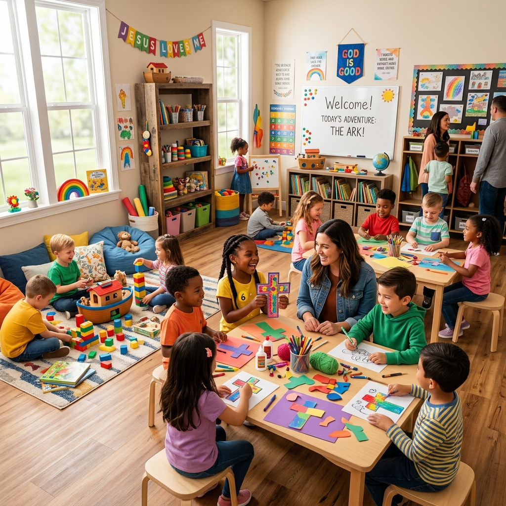

Destaque para Famílias (0 a 11 anos)
Ministério Infantil Kids Graça
Enquanto você assiste ao culto, seus filhos desfrutam de um ambiente 100% seguro, alegre e com lições bíblicas preparadas por voluntários e pedagogos treinados.
- ✓ Check-in de segurança por pulseira identificadora
- ✓ Salas divididas por faixa etária
- ✓ Berçário com monitoria médica e de amamentação